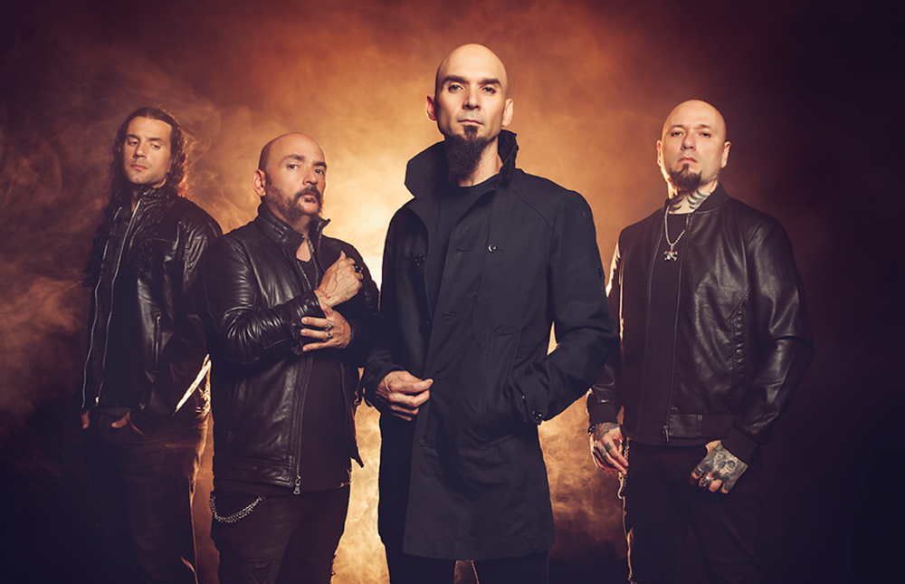

Sôber
Sôber es una banda madrileña formada a principios de 1993. Sôber significa sobrio, y la sobriedad es una de las características más notables del grupo, combinando la potencia musical con la melodía vocal, además de su característica y original puesta en escena. Fundada por Carlos Escobedo (voz y bajo) y Antonio Bernardini (guitarras), con Elias Romero a la batería a los que se sumó Jorge Escobedo (guitarras) unos meses más tarde, siendo esta la formación original de los entonces conocidos como Sôber Stoned.